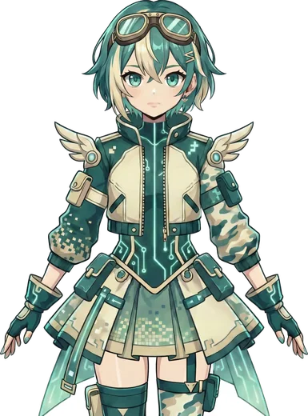

#{{NEXT_NUM}}em produção
O próximo guia
Linux, self-hosting, segurança no celular? A comunidade decide o próximo tema. Sugira, revise ou escreva junto com a gente.
>_ PousadaGuides
Pirataria segura, privacidade, OpSec e Bitcoin — explicados sem enrolação, curados pela comunidade e escritos em LaTeX aberto. Leia direto no navegador ou baixe o PDF.
// biblioteca
Clique em Ler online para abrir no leitor — sem baixar nada. Cada guia tem link curto para compartilhar, inclusive para uma página específica.

#{{NEXT_NUM}}Linux, self-hosting, segurança no celular? A comunidade decide o próximo tema. Sugira, revise ou escreva junto com a gente.
// leitor
Nada de “baixa o PDF da release e abre aí”. Cada guia abre num leitor rápido, bonito e leve, no PC ou no celular.
Abre na hora, no navegador. Funciona no celular, tablet e PC.
O botão de compartilhar copia o link já apontando para a página que você está lendo.
Navegue pelos capítulos, clique nas URLs das ferramentas e copie comandos do texto.
Quer guardar? Baixe o PDF de tela (fundo creme) ou o de impressão (fundo branco).
// filosofia
Inspirados nas grandes referências da comunidade (Megathread do r/Piracy, FMHY, PrivacyGuides), filtrando o que funciona e cortando armadilhas.
Higiene digital, fontes verificadas, sandbox, checagem de hashes e assinaturas. Segurança antes de conveniência.
Cada PDF nasce de código-fonte público sob GNU AGPLv3. Viu um erro? Abra uma issue ou um pull request.
GitHub Actions compila tudo e publica as releases assinadas. Este site é sem cookies, sem analytics e sem CDN de terceiros.
Tire dúvidas, sugira ferramentas e ajude a revisar os próximos guias.